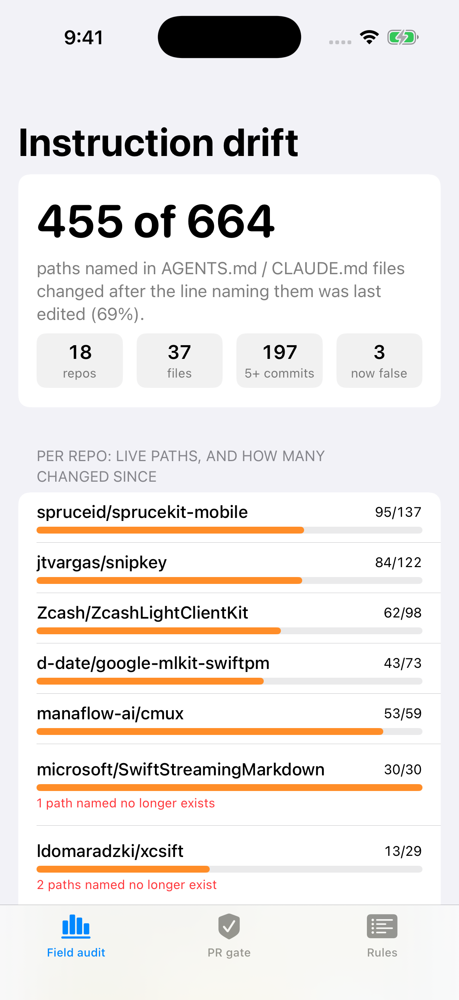
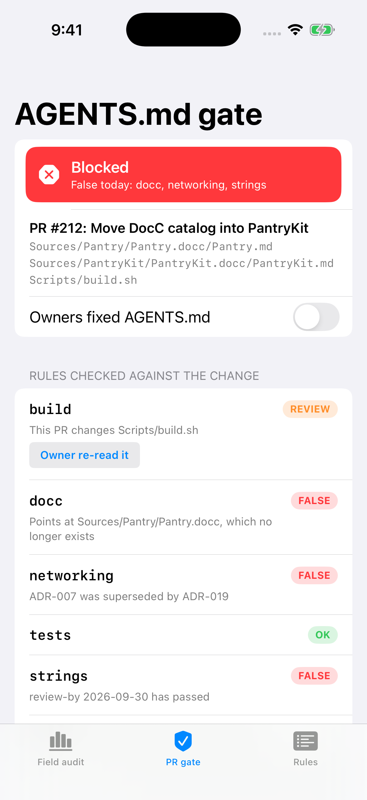
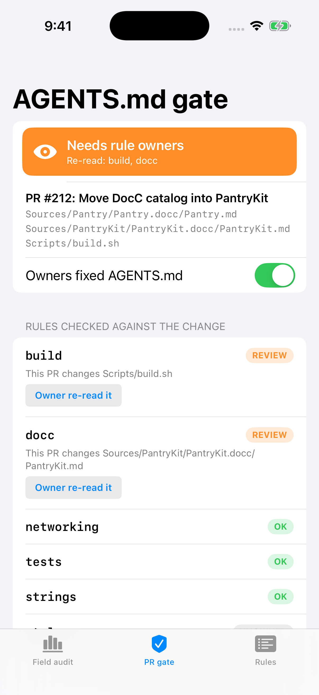

The demo, running on the iOS Simulator
Captured in CI with simctl from the app in this repo (Demo.xcodeproj).

Field audit: 455 of 664 live paths changed since written

PR gate: blocked by three rules that are false today

After the fix: two owners re-read, then it merges